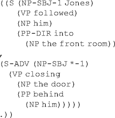
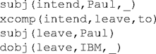
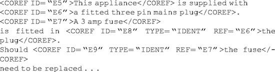

21.
Preparation and Analysis of Linguistic Corpora
Nancy Ide
The corpus is a fundamental tool for any type of research on language. The availability of computers in the 1950s immediately led to the creation of corpora in electronic form that could be searched automatically for a variety of language features, and compute frequency, distributional characteristics, and other descriptive statistics. Corpora of literary works were compiled to enable stylistic analyses and authorship studies, and corpora representing general language use became widely used in the field of lexicography. In this era, the creation of an electronic corpus required entering the material by hand, and the storage capacity and speed of computers available at the time put limits on how much data could realistically be analyzed at any one time. Without the Internet to foster data sharing, corpora were typically created, and processed at a single location. Two notable exceptions are the Brown Corpus of American English (Kucera and Francis 1967) and the London/Oslo/Bergen (LOB) corpus of British English (Johansson et al. 1978); both of these corpora, each containing 1 million words of data tagged for part of speech, were compiled in the 1960s using a representative sample of texts produced in the year 1961. For several years, the Brown and LOB were the only widely available computer-readable corpora of general language, and therefore provided the data for numerous language studies.
In the 1980s, the speed and capacity of computers increased dramatically, and, with more and more texts being produced in computerized form, it became possible to create corpora much larger than the Brown and LOB, containing millions of words. The availability of language samples of this magnitude opened up the possibility of gathering meaningful statistics about language patterns that could be used to drive language processing software such as syntactic parsers, which sparked renewed interest in corpus compilation within the computational linguistics community. Parallel corpora, which contain the same text in two or more languages, also began to appear; the best known of these is the Canadian Hansard corpus of Parliamentary debates in English and French. Corpus creation still involved considerable work, even when texts could be acquired from other sources in electronic form. For example, many texts existed as typesetter's tapes obtained from publishers, and substantial processing was required to remove or translate typesetter codes.
The "golden era" of linguistic corpora began in 1990 and continues to this day. Enormous corpora of both text and speech have been, and continue to be, compiled, many by government-funded projects in Europe, the USA, and Japan. In addition to monolingual corpora, several multilingual parallel corpora covering multiple languages have also been created. A side effect of the growth in the availability and use of corpora in the 1990s was the development of automatic techniques for annotating language data with information about its linguistic properties. Algorithms for assigning part of speech tags to words in a corpus and aligning words and sentences in parallel text (i.e., associating each word or sentence with its translation in the parallel version) were developed in the 1990s that achieve 95–98 percent accuracy. Automatic means to identify syntactic configurations such as noun phrases, and proper names, dates, etc., were also developed.
There now exist numerous corpora, many of which are available through the Linguistic Data Consortium (LDC) (http://www.ldc.upenn.edu) in the USA and the European Language Resources Association (ELRA) (http://www.elra.org) in Europe, both of which were founded in the mid-1990s to serve as repositories and distributors of corpora and other language resources such as lexicons. However, because of the cost and difficulty of obtaining some types of texts (e.g., fiction), existing corpora vary considerably in their composition; very few efforts have been made to compile language samples that are "balanced" in their representation of different genres. Notable exceptions (apart from the early Brown and LOB) are the British National Corpus (BNC) (http://www.hcu.ox.ac.uk/BNC/) and the American National Corpus (ANC) (http://www.Amer-icanNationalCorpus.org), as well as (to some extent) the corpora for several western European languages produced by the PAROLE project. In fact the greatest number of existing text corpora are composed of readily available materials such as newspaper data, technical manuals, government documents, and, more recently, materials drawn from the World Wide Web. Speech data, whose acquisition is in most instances necessarily controlled, are more often representative of a specific dialect or range of dialects.
Many corpora are available for research purposes by signing a license and paying a small reproduction fee. Other corpora are available only by paying a (sometimes substantial) fee; this is the case, for instance, for many of the holdings of the LDC, making them virtually inaccessible to humanists.
Preparation of Linguistic Corpora
The first phase of corpus creation is data capture, which involves rendering the text in electronic form, either by hand or via optical character recognition (OCR), acquisition of word processor or publishing software output, typesetter tapes, PDF files, etc. Manual entry is time-consuming and costly, and therefore unsuitable for the creation of very large corpora. OCR output can be similarly costly if it requires substantial post-processing to validate the data. Data acquired in electronic form from other sources will almost invariably contain formatting codes and other information that must be discarded or translated to a representation that is processable for linguistic analysis.
Representation formats and surrounding issues
At this time, the most common representation format for linguistic corpora is XML. Several existing corpora are tagged using the EAGLES XML Corpus Encoding Standard (XCES) (Ide et al. 2000), a Text Encoding Initiative (TEI) – compliant XML application designed specifically for linguistic corpora and their annotations. The XCES introduced the notion of stand-off annotation, which requires that annotations are encoded in documents separate from the primary data and linked to them. One of the primary motivations for this approach is to avoid the difficulties of overlapping hierarchies, which are common when annotating diverse linguistic features, as well as the unwieldy documents that can be produced when multiple annotations are associated with a single document. The stand-off approach also allows for annotation of the same feature (e.g., part of speech) using alternative schemes, as well as associating annotations with other annotations rather than directly to the data. Finally, it supports two basic notions about text and annotations outlined in Leech (1993): it should be possible to remove the annotation from an annotated corpus in order to revert to the raw corpus; and, conversely, it should be possible to extract the annotations by themselves from the text.
The use of stand-off annotation is now widely accepted as the norm among corpus and corpus-handling software developers; however, because mechanisms for inter-document linking have only recently been developed within the XML framework, many existing corpora include annotations in the same document as the text.
The use of the stand-off model dictates that a distinction is made between the primary data (i.e., the text without additional linguistic information) and their annotations, in particular, what should and should not be marked in the former. The XCES identifies two types of information that may be encoded in the primary data:
1 Gross structure: universal text elements down to the level of the paragraph, which is the smallest unit that can be identified language-independently; for example:
• structural units of text, such as volume, chapter, etc., down to the level of paragraph; also footnotes, titles, headings, tables, figures, etc.;
• features of typography and layout, for previously printed texts: e.g., list item markers;
• non-textual information (graphics, etc.).
2 Segmental structure: elements appearing at the sub-paragraph level which are usually signaled (sometimes ambiguously) by typography in the text and which are language-dependent; for example:
• orthographic sentences, quotations;
• orthographic words;
• abbreviations, names, dates, highlighted words.
Annotations (see next section) are linked to the primary data using XML conventions (XLink, Xpointer).
Speech data, especially speech signals, are often treated as "read-only", and therefore the primary data contain no XML markup to which annotations may be linked. In this case, stand-off documents identify the start and end points (typically using byte offsets) of the structures listed above, and annotations are linked indirectly to the primary data by referencing the structures in these documents. The annotation graphs representation format used in the ATLAS project, which is intended primarily to handle speech data, relies entirely on this approach to link annotations to data, with no option for referencing XML-tagged elements.
Identification of segmental structures
Markup identifying the boundaries of gross structures may be automatically generated from original formatting information. However, in most cases the original formatting is presentational rather than descriptive; for example, titles may be identifiable because they are in bold, and therefore transduction to a descriptive XML representation may not be straightforward. This is especially true for sub-paragraph elements that are in italic or bold font; it is usually impossible to automatically tag such elements as emphasis, foreign word, etc.
Creation of linguistic corpora almost always demands that sub-paragraph structures such as sentences and words, as well as names, dates, abbreviations, etc., are identified. Numerous programs have been developed to perform sentence "splitting" and word tokenization, many of which are freely available (see, for example, the tools listed in the Natural Language Software Registry (http://www.dfki.de/lt/registry/) or the SIL Software Catalogue (http://www.sil.org). These functions are also embedded in more general corpus development tools such as GATE (Cunningham 2002). Sentence splitting and tokenization are highly language-dependent and therefore require specific information (e.g., abbreviations for sentence splitting, clitics and punctuation conventions for tokenization) for the language being processed; in some cases, language-specific software is developed, while in others a general processing engine is fed the language-specific information as data and can thus handle multiple languages. Languages without word-boundary markers, such as Chinese and Japanese, and continuous speech represented by phoneme sequences, require an entirely different approach to segmentation, the most common of which is a dynamic programming algorithm to compute the most likely boundaries from a weighted transition graph. This, of course, demands that the probabilities of possible symbol or phoneme sequences are available in order to create the weighted graph.
Within the computational linguistics community, software to identify so-called "named entities" (proper names designating people, places, organizations, events, documents, etc.), as well as dates and other time expressions, has been developed, and many of these tools are freely available for research. However, most of these tools have been developed using existing corpora which consist of newspapers and government reports and are unlikely to perform well on the kinds of data that interest humanists, such as literary works, historical documents, etc. This is just one example of the broader situation in the development of corpus-handling tools: the available data, which are often highly skewed for genre, drive tool, and algorithm development, and therefore applicability to more generalized corpora is often limited.
Corpus annotation
For computational linguistics research, which has driven the bulk of corpus creation efforts over the past decade, corpora are typically annotated with various kinds of linguistic information. The following sections outline the major annotation types.
Morpho-syntactic annotation
By far the most common corpus annotation is morpho-syntactic annotation (part-of-speech tagging), primarily because several highly accurate automatic taggers have been developed over the past fifteen years. Part-of-speech tagging is a disambiguation task: for words that have more than one possible part of speech, it is necessary to determine which one, given the context, is correct. Although, in English, close to 90 percent of the words in the language have only one part of speech, in actual use (e.g., in a corpus), part of speech for as many as 40 percent of the word instances may be ambiguous (DeRose 1988), due in large part to ambiguity for a handful of high-frequency words such as "that", which can be either a determiner ("that girl") or a complementizer ("He heard that you came home"). Beyond this, the most common ambiguity in English is between verb and noun, e.g., "hide", "dog", "brand", "felt", etc.
Taggers fall into two general classes: rule-based (e.g. ENGTWOL, Voutilainen, 1995), which use manually generated rules to assign part of speech, and stochastic, which rely on probabilities for n-grams – sequences of n (usually, 2 or 3) tags that are known to occur in real data. Stochastic taggers learn these probabilities by being "trained" on previously tagged data that have been hand-validated for correctness. A third type of tagger, often called the "Brill tagger" after its developer (Brill 1995), uses a hybrid approach which learns its tagging rules from a previously tagged training corpus. Obviously, the more accurately tagged data a tagger can use for training, the more likely its probabilities will be correct. This fact has led to the creation of corpora that have been hand-annotated (or in which automatically produced tags have been hand-validated) specifically intended for training, in order to enable automatic taggers to produce even more tagged corpora.
The tags generated by a part-of-speech tagger provide more information than simple word class (noun, verb, adjective, etc.). Various levels of morpho-syntactic information can be represented; the more detailed the information, the bigger the tagset, and the bigger the tagset, the less accurate an automatic tagger will be. For this reason, tagsets including 50–100 tags that collapse or eliminate detailed morpho-syntactic information – such as the information in the morpho-syntactic specifications for western and eastern European languages produced by the EAGLES project (http://www.ilc.pi.cnr.it/EAGLES/home.html) – are most typically used in automatic tagging.
There are several tagsets in common use for English, most of which evolved from the 87 tags used in the Brown corpus (http://www.hit.uib.no/icame/brown/bcm.html). Probably the most widely used is the 45-tag set of the Penn Treebank project (Marcus et al. 1993), of which only 36 are actual morpho-syntactic categories (the rest are for punctuation, list markers, etc.). The Penn tagset is a variant of the Brown tagset that eliminates information retrievable from the form of the lexical item. It therefore includes only one tag for different forms of the verbs "be", "have", and "do", whereas the Brown (and other common tagsets for English) provide a different tag for each of these forms. Another well-known tagset for English is the 61-tag C5 tagset of the CLAWS (Constituent Likelihood Automatic Word-tagging System) tagger, developed at the University of Lancaster (Garside and Smith 1997) and used to tag the British National Corpus.
Part-of-speech taggers rely on lexicons that provide all of the possible part of speech assignments for a lexical item found in the input, from which it must choose the most probable given the immediate context. The information in the lexicons must therefore match – or at least, be mappable to – the tagset used by the tagger. It is an unfortunate fact that it is often extremely difficult and sometimes impossible to map one tagset to another, which has resulted in much re-creation of lexical information to suit the needs of a particular tagger.
Many lexicons include lemmas (root forms), and morpho-syntactic annotation may produce lemmas as well as part-of-speech tags in their output. The presence of lemmas in an annotated text enables extraction of all orthographic forms associated with a given lemma (e.g., "do", "does", "doing, "did" for the lemma "do"). However, although relatively easily produced, many existing corpora do not include lemmas; notable exceptions are the Journal of the Commission corpus, the Orwell multilingual corpus, and the SUSANNE corpus.
Parallel alignment
In addition to algorithms for morpho-syntactic annotation, reliable algorithms for alignment of parallel texts – i.e., texts for which there exist translations in two or more languages – have been developed. Probability information about correspondences between words, phrases, and other structures derived from aligned corpora are used to choose from multiple possible translations that may be generated by a machine translation system. Parallel corpora have also been used to automatically generate bilingual dictionaries (e.g., Dagan and Church 1997) and, more recently, as a means to achieve automatic sense tagging of corpora (e.g., Ide et al. 2001).
Two types of parallel alignment are common: sentence alignment and word alignment. Sentence alignment is by far the easier and more accurate of the two, the major problem being to determine cases in which one-to-many or partial mappings exist. Many sentence and word-aligned corpora exist, the vast majority of which include only two languages. Probably the best known is the English-French Hansard Corpus of Canadian Parliamentary debates, which has served as the basis for numerous translation studies. Multilingual parallel corpora are much more rare; the difficulty is not in the alignment itself, but rather in the availability of texts in multiple translations (in particular, texts that are not bound by copyright or other restrictions). Existing multilingual aligned corpora include the United Nations Parallel Text Corpus (English, French, Spanish), the Journal of the Commission (JOC) corpus (English, French, German, Italian, Spanish), the Orwell 1984 Corpus (Bulgarian, Czech, English, Estonian, Hungarian, Latvian, Lithuanian, Romanian, Serbo-Croat, Slovene), Plato's Republic (Bulgarian, Chinese, Czech, English, German, Latvian, Polish, Romanian, Slovak, Slovene) and the Bible (Chinese, Danish, English, Finnish, French, Greek, Indonesian, Latin, Spanish, Swahili, Swedish, Vietnamese).
Syntatic annotation
There are two main types of syntactic annotation in linguistic corpora: noun phrase (NP) bracketing or "chunking", and the creation of "treebanks" that include fuller syntactic analysis. Syntactically annotated corpora serve various statistics-based applications, most notably, by providing probabilities to drive syntactic parsers, and have been also used to derive context-free and unification-based grammars (Charniak 1996; Van Genabith et al. 1999). Syntactically annotated corpora also provide theoretical linguists with data to support studies of language use.
The best known and most widely used treebank is the Penn Treebank for English (Marcus et al. 1993). Ongoing projects exist for the development of treebanks for other languages, including German (the NEGRA corpus, Brants et al. 2003; Stegman et al. 1998), Czech (The Prague Dependency Treebank, Hajic 1998), French (Abeille et al. 2000), and Chinese (Xue et al. 2002). The Penn Treebank and the Chinese Treebank, both created at the University of Pennsylvania, use LISP-like list structures to specify constituency relations and provide syntactic category labels for constituents, as shown below:  Although they differ in the labels and in some cases the function of various nodes in the tree, many treebank annotation schemes provide a similar constituency-based representation of relations among syntactic components. In contrast, dependency schemes do not provide a hierarchical constituency analysis, but rather specify grammatical relations among elements explicitly; for example, the sentence "Paul intends to leave IBM" could be represented as follows:  Here, the predicate is the relation type, the first argument is the head, the second the dependent, and additional arguments may provide category-specific information (e.g., introducer for prepositional phrases). Finally, so-called "hybrid systems" combine constituency analysis and functional dependencies, usually producing a shallow constituent parse that brackets major phrase types and identifies the dependencies between heads of constituents (e.g., the NEGRA Corpus).
Although most modern treebanks utilize an SGML or XML encoding rather than list structures, syntactic annotation is invariably interspersed with the text itself. This makes it difficult or impossible to add other kinds of annotations to the data, or to provide alternative syntactic annotations. As noted earlier, the use of stand-off annotations is increasingly encouraged. A stand-off scheme for syntactic annotations, which also serves as a. "pivot" format for representing different types of syntactic annotation with a common scheme, has been developed by Ide and Romary (2001).
Semantic annotation
Semantic annotation can be taken to mean any kind of annotation that adds information about the meaning of elements in a text. Some annotations that may be considered to provide semantic information – for example, "case role" information such as agent, instrument, etc. – are often included in syntactic annotations. Another type of semantic annotation common in literary analysis (especially in the 1960s and 1970s) marks words or phrases in a text as representative of a particular theme or concept. At present, the most common type of semantic annotation is "sense tagging": the association of lexical items in a text with a particular sense or definition, usually drawn from an existing sense inventory provided in a dictionary or online lexicon such as WordNet (Miller et al. 1990).
The major difficulty in sense annotation is to determine an appropriate set of senses. Simply examining the differences in sense distinctions made from one dictionary to another demonstrates the difficulty of this task. To solve the problem, some attempts have been made to identify the kinds of sense distinctions that are useful for automatic language processing: for example, tasks such as information retrieval may require only very coarse-grained sense distinctions – the difference between "bank" as a financial institution vs. a river bank – whereas others, and in particular machine translation, require finer distinctions – say, between "bank" as a financial institution and as a building. However, by far the most common source of sense tags used for semantic annotation is WordNet, an online dictionary that in addition to providing sense lists, groups words into "synsets" of synonymous words. WordNet has been updated several times, and as a result, its sense list may differ for a particular word depending on the WordNet version used for the tagging.
It is widely acknowledged that the sense distinctions provided in WordNet are far from optimal. However, this resource, which is among the most heavily used in natural language processing research over the past decade, will likely continue to serve as a basis for sense tagging for at least the foreseeable future, if for no other reason than that it continues to be the only freely available, machine-tractable lexicon providing extensive coverage of English. The Euro WordNet project has produced WordNets for most western European languages linked to WordNet 1.5 (the current version of the English WordNet is 2.0), and WordNets for other languages (e.g., Balkan languages) are under development, which is likely to extend the research community's reliance on its sense inventory. In any case, no clearly superior alternative source of sense distinctions has been proposed.
Because sense-tagging requires hand annotation, and because human annotators will often disagree on sense assignments even given a predefined sense inventory, very few sense-tagged corpora exist. Examples include the Semantic Concordance Corpus (SemCor; Miller et al. 1993), produced by the WordNet project, which assigns WordNet sense tags for all nouns, verbs, and adjectives in a 250,000-word corpus drawn primarily from the Brown Corpus; the DSO Corpus, containing sense-tags for 121 nouns and 70 verbs in about 192,800 sentences taken from the Brown Corpus and the Wall Street Journal; and Hector, containing about 200,000 tagged instances of 300 words in a corpus of British English.
Automatic means to sense-tag data have been sought ever since machine-readable texts became available. This area of research, called "word sense disambiguation", remains to this day one of the more difficult problems in language processing. Although rule-based approaches have been developed, the most common approaches to word sense disambiguation over the past decade are statistics-based, relying on the frequency with which lexical items (or categories of lexical items) in the context under consideration have been found in the context of a word in a given sense. Some recent research (Ide 2000; Ide et al. 2001; Doab and Resnik 2002) has explored the use of information gleaned from parallel translations to make sense distinctions. For a comprehensive overview of approaches to word sense disambiguation see Ide and Veronis (1998).
Discourse-level annotation
There are three main types of annotation at the level of discourse: topic identification, co-reference annotation, and discourse structure.
Topic ientification
(also called "topic detection") annotates texts with information about the events or activities described in the text. Automatic means for topic detection over streams of data such as broadcast news and newswires is under development, primarily in the context of the DARPA-sponsored Topic Detection Task. A subtask of this kind of annotation is detection of boundaries between stories/texts, which may also be included in the annotation.
Co-reference annotation
Links referring objects (e.g., pronouns, definite noun phrases) to prior elements in a discourse to which they refer. This type of annotation is invariably performed manually, since reliable software to identify co-referents is not available. For example, the MUG 7 (Message Understanding Conference) corpus contains hand-generated co-reference links (Hirschman and Chinchor 1997) marked in a non-stand-off SGML format similar to the following: 
Discourse structure annotation
Identifies multi-level hierarchies of discourse segments and the relations between them, building upon low-level analysis of clauses, phrases, or sentences. There are several theoretical approaches to the analysis of discourse structure, differing in terms of the span of text (clause, sentence, etc.) that is considered to be the atomic unit of analysis, and in the relations defined to exist between units and higher-level structures built from them. Most common approaches are based on "focus spaces" (Grosz and Sidner 1986) or Rhetorical Structure Theory (Mann and Thompson 1988). To date, annotation of discourse structure is almost always accomplished by hand, although some software to perform discourse segmentation has been developed (e.g., Marcu 1996).
Annotation of speech and spoken data
The most common type of speech annotation is an orthographic transcription that is time-aligned to an audio or video recording. Often, annotation demarcating the boundaries of speech "turns" and individual "utterances" is included. Examples of speech corpora in this type of format include the Child Language Data Exchange System (CHILDES) corpus (MacWhinney 1995), the TIMIT corpus of read speech (Lamel et al. 1990), and the LACITO Linguistic Data Archiving Project (Jacobson and Michailovsky 2000).
The orthographic transcription of speech data can be annotated with any of the kinds of linguistic information outlined in previous sections (e.g., part of speech, syntax, co-reference, etc.), although this is not common. In addition, speech data may be annotated with phonetic segmentation and labeling (phonetic transcription), prosodic phrasing and intonation, disfluencies, and, in the case of video, gesture.
Most types of annotation particular to speech data are time-consuming to produce because they must be generated by hand, and because the annotators must be skilled in the recognition and transcription of speech sounds. Furthermore, speech annotation is problematic: for example, phonetic transcription works on the assumption that the speech signal can be divided into single, clearly demarcated sounds, but these demarcations are often rather unclear. Prosodic annotation is even more subjective, since the decision about the exact nature of a tone movement often varies from annotator to annotator. The kinds of phenomena that are noted include onset, rising tone, falling tone, rising/falling tone, level tone, pause, overlap, etc. The notations for prosodic annotation vary widely and they are not typically rendered in a standard format such as XML. As a result, the few existing corpora annotated for prosody are widely inconsistent in their format. One of the best known such corpora is the London-Lund Corpus of Spoken English (Svartvik 1990).
Corpus annotation tools
Over the past decade, several projects have created tools to facilitate the annotation of linguistic corpora. Most are based on a common architectural model introduced in the MULTEXT project, which views the annotation process as a chain of smaller, individual processes that incrementally add annotations to the data. A similar model was developed in the TIPSTER project.
Among the existing annotation tools for language data are LT XML (University of Edinburgh), which directly implements the MULTEXT model and is especially geared toward XML-encoded resources; GATE (University of Sheffield), based on the TIPSTER model and including tools for tokenization, sentence splitting, named entity recognition, part of speech tagging, as well as corpus and annotation editing tools. The Multilevel Annotation, Tools Engineering (MATE) project provides an annotation tool suite designed especially for spoken dialogue corpora at multiple levels, focusing on prosody, (morpho-)syntax, co-reference, dialogue acts, and communicative difficulties, as well as inter-level interaction. ATLAS (Architecture and Tools for Linguistic Analysis Systems) is a joint initiative of the US National Institute for Standards and Technology (NIST), MITRE, and the LDC to build a general-purpose annotation architecture and a data interchange format. The starting point in ATLAS is the annotation graph model, with some significant generalizations.
Currently, a subcommittee of the International Standards Organization (ISO) – ISO TC37 SC4 – is developing a generalized model for linguistic annotations and processing tools, based on input from developers of the annotation tool suites mentioned above as well as from annotation scheme designers. The goal is to provide a common "pivot" format that instantiates a generalized data model of linguistic resources and their annotations to and from which existing formats – provided they are consistent with the model – can be mapped in order to enable seamless interchange. At present, data annotated within one project, using XML, annotation graphs, or a proprietary annotation scheme, are typically difficult to import for manipulation using another tool suite, either for further annotation or analysis. The developing ISO model is intended to allow annotators to use any of a variety of schemes to represent their data and annotations, and map it to a common format for interchange. Users of other schemes would then import the data in the common format to their own schemes. This means, for example, that a corpus marked up using TEI or XCES conventions can be mapped to the common format and, from that, mapped again to, say, an annotation graph representation that will enable manipulation of the data by tools implementing that model, without information loss.
The future of corpus annotation
Recent developments in the XML world, primarily in the scope of work within the World Wide Web Consortium (W3C), have focused attention on the potential to build a Semantic Web. This possibility has interesting ramifications for both corpus annotation and analysis, in two (related) ways. First, the underlying technology of the Semantic Web enables definition of the kinds of relationships (links) one resource – where a "resource" can be any fragment of a document or the document as a whole – may have with another. For example, a "word" may have a link labeled "part of speech" with another resource that represents (possibly, as a simple string) "noun" or "noun singular masculine." Because annotation is, at the base, the specification of relationships between information in a corpus and linguistic information that describes it, the development of technologies such as the Resource Description Framework (RDF) can have significant impact on the way annotations are associated with primary language resources in the future.
A second activity within the Semantic Web community that has ramifications for both annotation and analysis of linguistic data is the development of technologies to support the specification of and access to ontological information. Ontologies, which provide a priori information about relationships among categories of data, enable the possibility to apply inferencing processes that can yield information that is not explicit in the data itself. For example, to properly parse a sentence such as "I ate a fish with a fork" – that is, to attach the prepositional phrase "with a fork" to the verb "eat" and not as a modifier of "fish" – we can check an ontology that specifies that "fork" IS-A sub-class of "instrument", and that "eat" has a USES-A relation with things of type "instrument." More generally, we may be able to identify the topic of a given document by consulting an ontology. For example, the ontology may specify that the word "bank" can represent a sub-class of "financial institution" or "geological formation"; if the document contains several other words that are also related to "financial institution" such as "money", "account", etc., we may conclude that the document has financial institutions as one of its topics (and, as a side effect, that the word "bank" is being used in that sense in this document).
In order to be able to exploit ontological information, it must be created and stored in a universally accessible form. The W3C group developing the Ontological Web Language (OWL) is providing a standard representation format. It is now up to the computational linguistics community to instantiate the relevant ontological information and use it to annotate and analyze language data. Development and use of ontologies has in fact been a part of the field for several years – in particular, the ontology in the WordNet lexicon has been widely used for annotation and analysis of language data. Semantic Web technologies will enable development of common and universally accessible ontological information.
Analysis of Linguistic Corpora
There are two major uses for linguistic corpora: statistics-gathering to support natural language processing; and language analysis to support language learning and dictionary creation.
Statistics gathering
A corpus provides a bank of samples that enable the development of numerical language models, and thus the use of corpora goes hand in hand with empirical methods. In the late 1980s, the increased availability of large amounts of electronic text enabled, for the first time, the full-scale use of data-driven methods to attack generic problems in computational linguistics, such as part-of-speech identification, prepositional phrase attachment, parallel text alignment, word sense disambiguation, etc. The success in treating at least some of these problems with statistical methods led to their application to others, and by the mid-1990s, statistical methods had become a staple of computational linguistics work.
The key element for many statistics-based approaches to language processing (in particular, so-called "supervised" methods) is the availability of large, annotated corpora, upon which annotation algorithms are trained to identify common patterns and create transformations or rules for them. The stochastic part-of-speech taggers described above are probably the best-known application relying on previously annotated corpora, but similar approaches are also used for word sense disambiguation, probabilistic parsing, and speech recognition. In word sense disambiguation, for example, statistics are gathered reflecting the degree to which other words are likely to appear in the context of some previously sense-tagged word in a corpus. These statistics are then used to disambiguate occurrences of that word in untagged corpora, by computing the overlap between the unseen context and the context in which the word was seen in a known sense.
Speech recognition is, in fact, the area of computational linguistics in which corpora were first put into large-scale use in support of language processing, beginning with the utilization of Hidden Markov Models (HMMs) in the 1970s. This paradigm required data to statistically train an acoustic model to capture typical sound sequences and a language model to capture typical word sequences, and produced results that were far more accurate and robust than the traditional methods. It was not until the late 1980s that the statistical approach was applied to other areas, one of the first of which was machine translation. Following the same approach as the speech recognition systems, researchers automatically trained a French-English correspondence model (the Translation Model) on 3 million sentences of parallel French and English from the Canadian Parliamentary records, and also trained a Language Model for English production from Wall Street Journal data. To translate, the former model was used to replace French words or phrases by the most likely English equivalents, and then the latter model ordered the English words and phrases into the most likely sequences to form output sentences.
Probabilistic parsing is one of the more recent applications of statistical methods to language processing tasks. Again, large bodies of data previously annotated and validated for syntactic structure are required in order to provide statistics concerning the probability that a given syntactic construction is the correct one in its context. Syntactic structure can be very ambiguous; traditional parsers often produced numerous alternative structural analyses for an input sentence. A probabilistic parser uses previously gathered statistics to choose the most probable interpretation.
Issues for corpus-based statistics gathering
In order to be representative of any language as a whole, it is necessary that a corpus include samples from a variety of texts that reflect the range of syntactic and semantic phenomena across that language. This demands, first of all, that the data be adequately large in order to avoid the problem of data sparseness that plagues many statistical approaches. For example, for tasks such as word sense disambiguation, data must be extensive enough to ensure that all senses of a polysemous word are not only represented, but represented frequently enough so that meaningful statistics can be compiled. Although it has been extensively used for natural language processing work, the million words of a corpus such as the Brown Corpus are not sufficient for today's large-scale applications: many word senses are not represented; many syntactic structures occur too infrequently to be significant, and the corpus is far too small to be used for computing the bi-gram and tri-gram probabilities that are necessary for training language models for speech recognition.
Unfortunately, in the main, the large corpora freely available for research consist of texts that can be easily acquired and are available for redistribution without undue problems of copyright, etc. Because of this, corpora used for statistics gathering for language processing are vastly over-representative of certain genres, in particular newspaper samples, which constitute the greatest percentage of texts currently available from, for example, the LDC, and which also dominate the training data available for speech recognition purposes. Other available corpora typically consist of technical reports, transcriptions of parliamentary and other proceedings, short telephone conversations, and the like. The upshot of this is that corpus-based natural language processing has relied heavily on language samples representative of usage in a handful of limited and linguistically specialized domains. This can lead to drastically skewed results: for example, in newspaper data, there is a disproportionate number of complex NP complements for some verbs, which appear in sentences typical of newspaper style, such as "The price rose two percent to 102 dollars per share from 100 dollars per share." Similar problems arise in work on word sense disambiguation: it has been noted that for some typical test words such as "line", certain senses (for example, the common sense of "line" as in the sentence, "He really handed her a line") are absent entirely from resources such as the Wall Street Journal.
The problem of balance is acute in speech recognition. Speech recognition systems are notoriously dependent on the characteristics of their training corpora. Corpora large enough to train the tri-gram language models of modern speech recognizers (many tens of millions of words) are invariably composed of written rather than spoken texts. But the differences between written and spoken language are even more severe than the differences between balanced corpora like the Brown and newspaper corpora like the Wall Street Journal. Therefore, whenever a state-of-the-art speech recognition research effort moves to a new domain, a new large training corpus of speech must be collected, transcribed at the word level, and the transcription aligned to the speech.
Language analysis
The gathering of authentic language data from corpora enables a description of language that starts from the evidence rather than from imposing some theoretical model. Because speakers and writers produce language with real communicative goals, corpora of native-speaker texts provide, in principle, samples of genuine language. For this reason, one of the oldest uses of corpora is for dictionary-making, or lexicography, and in particular, lexicography with the goal of producing so-called "learners' dictionaries" designed for those learning a new language.
The COBUILD corpus was compiled starting in the early 1980s, at which time it included about 7 million words. This corpus was used to create the Collins COBUILD English Dictionary, the first dictionary relying fully on corpora for its creation. Following this lead, over the course of the next decade most British dictionary publishers began to use corpora as the primary data source for their dictionaries, although interestingly, American dictionary publishers are only now beginning to rely on corpora to guide lexicography.
The basic lexicographic tool for analyzing a corpus is a concordancer, a program that displays occurrences of a word in the middle of a line of context from the corpus. However, the huge increase in available data has led to a situation where lexicographers are presented with hundreds or even thousands of concordance lines for a single word. As a result, lexicographers have begun to rely on techniques derived from computational linguistics to summarize concordance data. The most common is the "Mutual Information" (MI) score, a statistical measure that shows how closely one word is associated with others based on the regularity with which they co-occur in context. For example, in English, the mutual information score for the words "strong" and "tea" is much higher than the score for "powerful" and "tea", despite the fact that "strong" and "powerful" have similar meanings. This kind of information is invaluable for lexicographers, especially for the creation of language learners' dictionaries that must provide this kind of distinction.
Most recently, dictionary makers have teamed with researchers in the field of computational linguistics to glean even more precise information from corpus data. For example, MI scores can show that "strong" collocates with northerly, showings, believer, currents, supporter, and odor, while "powerful" collocates with words such as tool, minority, neighbor, symbol, figure, weapon, and post; but the MI score does not indicate the kinds of grammatical relations that exist among a word and its collocates. Supplemental grammatical information can provide even more precise understanding of word usage. For example, the word "tea" collocates with words like spoon, milk, and sugar when these words appear as the object of the preposition "with"; with mug, saucer, and cup when they are objects of the preposition "into"; with coffee, toast, sugar, etc., when joined by "and" or "or"; and "tea" is most commonly the object of verbs such as drink, sip, pour, finish, and make.
To gather this information, relatively sophisticated language-processing software is required that can annotate the data for one or more of the types of information outlined in the previous sections. The need for more informative results to serve the needs of lexicography has therefore led to increased collaboration with computational linguists. We see, as a result, two groups of researchers who had previously worked independently coming together to tackle common problems.
In general, researchers in the humanities and researchers in computational linguistics have not collaborated, despite their common problems and goals. With the advent of the World Wide Web, this should change soon. Humanists have increased access to information about work in computational linguistics as well as to tools and resources developed by that community. Computational linguists, on the other hand, are likely to face new language processing challenges due to the need to handle a greater variety of web-accessible materials, including literary works, historical documents, and the like. The eventual collaboration of these two groups should lead, in the end, to vastly increased capabilities for both.
References for Further Reading
Abeillé, A., L. Clément, and A. Kinyon (2000). Building a Treebank for French. Proceedings of the Second International Conference on Language Resources and Evaluation: 87–94.
Brants, T., W. Skut, and H. Uszkoreit (in press 2003). Syntactic Annotation of a German Newspaper Corpus. In A. Abeillé (ed.), Building and Using Syntactically Annotated Corpora. Dordrecht: Kluwer Academic.
Brill, E. (1995). Transformation-based Error-driven Learning and Natural Language Processing: A Case Study in Part of Speech Tagging. Computational Linguistics 21: 543–65.
Charniak, E. (1996). Tree-bank Grammars. AAAI-96: Proceedings of the Thirteenth National Conference on Artificial Intelligence: 598–603.
Cunningham, H. (2002). GATE, a General Architecture for Text Engineering. Computers and the Humanities 36: 223–54.
Dagan, I. and K. Church (1997). Termight: Coordinating Humans and Machines in Bilingual Terminology Translation. MachineTranslation 12: 89–107.
DeRose, S. (1988). Grammatical Category Disambiguation by Statistical Optimization. Computational Linguistics 14: 31–9.
Doab, M. and P. Resnik (2002). An Unsupervised Method for Word Sense Tagging Using Parallel Corpora. Proceedings of the 40th Annual Meeting of the Association for Computational Linguistics: 255–61.
Garside, R. and Smith, N. (1997). A Hybrid Grammatical Tagger: CLAWS4. In R. Garside, G. Leech, and A. McEnery (eds.), Corpus Annotation: Linguistic Information from Computer Text Corpora (pp. 102–21). London: Longman.
Grosz, B. and C. Sidner (1986). Attention, Intention and the Structure of Discourse. Computational Linguistics 12: 175–204.
Hajič, J. (1998). Building a Syntactically Annotated Corpus: The Prague Dependency Treebank. In E. Hajicova (ed.), Issues of Valency and Meaning: Studies in Honour of jarmila Panevova. Prague: Charles University Press.
Hirschman, L. and N. Chinchor (1997). MUC-7 Co-reference Task Definition Version 3.0. At http://www.itl.nist.gov/iaui/894.02/related_projects/muc/proceedings/co_task.html.
Ide, N. (2000). Cross-lingual Sense Determination: Can It Work? Computers in the Humanitie 34: 1–2. (Special Issue on the Proceedings of the SIGLEX/SENSEVAL Workshop, ed. A. Kilgarriff and M. Palmer: 223–34.).
Ide, N. and L. Romary (2001). A Common Framework for Syntactic Annotation. Proceedings of ACL'2001: 298–305.
Ide, N. and J. Veronis (1998). Introduction to the Special Issue on Word Sense Disambiguation: The State of the Art. Computational Linguistics 24: 1–40.
Ide, N., P. Bonhomme, and L. Romary (2000). XCES: An XML-based Standard for Linguistic Corpora. Proceedings of the Second Language Resources and Evaluation Conference: 825–30.
Ide, N., T. Erjavec, and D. Tufis (2001). Automatic Sense Tagging Using Parallel Corpora. Proceedings of the Sixth Natural Language Processing Pacific Rim Symposium: 83–9.
Jacobson, M., and B. Michailovsky (2000). A Linguistic Archive on the Web. IRCS/lSLE/Talkbank Linguistic Exploration Workshop: Web-Based Language Documentation and Description. At http://www.ldc.upenn.edu/exploration/expl2000/papers/michailovsky/index.htm.
Johansson, S., G. Leech, and H. Goodluck (1978). Manual of Information to Accompany the Lancaster-Oslo/Bergen Corpus of British English, for Use with Digital Computers. Department of English, University of Oslo.
Kucera, H. and W. N. Francis (1967). Computational Analysis of Present-Day American English. Providence, RI: Brown University Press.
Lamel, L. F., J. Garafolo, J. Fiscus, W. Fisher, and D. S. Fallen (1990). TIMIT: The Darpa Acoustic-phonetic Speech Corpus. Technical Report NISTIR 4930, National Institute of Standards and Technology.
Leech, G. (1993). Corpus Annotation Schemes. Literary and Linguistic Computing 8: 275–81.
MacWhinney, B. (1995). The CHILDES Project, 2nd edn. Mahwah, NJ: Lawrence Erlbaum.
Mann, W. C. and S. A. Thompson (1988). Rhetorical Structure Theory: A Theory of Text Organization. Text 8: 243–81.
Marcu, D. (1996). Building Up Rhetorical Structure Trees. Proceedings of the Thirteenth National Conference on Artificial Intelligence 2: 1069–74.
Marcus, M., B. Santorini, and M. A. Marcinkiewicz (1993). Building a Large Annotated Corpus of English: The Penn Treebank. Computational Linguistics 19, 2.
Miller, G., C. Leacock, T. Randee, and R. Bunker (1993). A Semantic Concordance. Proceedings of the 3rd DARPA Workshop on Human Language Technology. 303–8.
Miller, G. A., R. Beckwith, C. Fellbaum, D. Gross, and K. Miller (1990). WordNet: An On-line Lexical Database. International Journal of Lexicography 3: 235–44.
Ramshaw, L. and M. Marcus (1995). Text Chunking Using Transformation-based Learning. Proceedings of the Third ACL Workshop on Very Large Corpora: 82–94.
Srinivas, B. (1997). Performance Evaluation of Supertagging for Partial Parsing. In H. Blunt and A. Nijholt (eds.), Advances in Probabilistic and other Parsing Technologies (pp. 203–20). The Hague: Kluwer Academic.
Stegman, R., H. Schulz, and E. Hinrichs (1998). Stylebook for the German Treebank in VERBMOBIL. Manuskript Universität Tübingen. At http://verbmobil.dfki.de/verbmobil/.
Svartvik, J., (ed.) (1990). The London Corpus of Spoken English: Description and Research. Lund Studies in English 82. Lund: Lund University Press.
Van Genabith, J., A Way, and L. Sadler (1999). Semi-automatic Generation of f-Structures from Tree Banks. In M. Butt and T. H. King (eds.), Proceedings of the LFG99 Conference, Manchester University, July 19–21. CSLI Online, From Treebank Resources to LFG Structures. Stanford, CA. At http://www-csli.stanford.edu/publications/.
Voutilainen, A. (1995). A Syntax-based Part-of-speech Analyzer. Proceedings of the European Chapter of the Association for Computational Linguistics: 157–64.
Xue, N., F. Chiou, and M. Palmer (2002). Building a Large-scale Annotated Chinese Corpus. Proceedings of the 19th International Conference on Computational Linguistics (COLING).